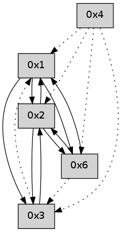

>> << IDX [start] -100 -25 -5 +0 +5 +25 +100 [345.117473125]
 Previous packets
----------------------------------------------------------------------
340.196392 beacon01(adaf) #0 coord=01,02,05,03,04,06 cycle=432.0ms assoc
-- color-indic=0 64 c0 20
340.206352 beacon02(adaf) #0 coord=01,02,05,03,04,06 cycle=432.0ms assoc 64 91 df
340.216352 beacon05(adaf) #0 coord=01,02,05,03,04,06 cycle=432.0ms assoc 64 37 f5
340.226353 beacon03(adaf) #0 coord=01,02,05,03,04,06 cycle=432.0ms assoc 64 ab d1
340.236354 beacon04(adaf) #0 coord=01,02,05,03,04,06 cycle=432.0ms assoc 64 0d fb
340.246354 beacon06(adaf) #0 coord=01,02,05,03,04,06 cycle=432.0ms assoc 64 79 e7
340.257961 [Hello(2): seq=635 sym=1 sysInfo= stat=1:0,0,0,0]
----------------------------------------------------------------------
340.688499 beacon01(adaf) #0 coord=01,02,05,03,04,06 cycle=432.0ms assoc
-- color-indic=0 64 b8 8d
340.698459 beacon02(adaf) #0 coord=01,02,05,03,04,06 cycle=432.0ms assoc 64 e9 72
340.708460 beacon05(adaf) #0 coord=01,02,05,03,04,06 cycle=432.0ms assoc 64 4f 58
340.718461 beacon03(adaf) #0 coord=01,02,05,03,04,06 cycle=432.0ms assoc 64 d3 7c
340.728460 beacon04(adaf) #0 coord=01,02,05,03,04,06 cycle=432.0ms assoc 64 75 56
340.738461 beacon06(adaf) #0 coord=01,02,05,03,04,06 cycle=432.0ms assoc 64 01 4a
340.749558 [Hello(1): seq=36 sym=2,6 sysInfo= stat=2:3,0,0,0/6:4,0,0,0]
340.753746 [Hello(4): seq=137 asym=1,2 sysInfo= stat=1:7,0,0,0/2:9,0,0,0]
340.755532 [Hello(3): seq=137 sym=2 asym=1 sysInfo= stat=2:2,0,0,0/1:7,0,0,0]
----------------------------------------------------------------------
341.180607 beacon01(adaf) #0 coord=01,02,05,03,04,06 cycle=432.0ms assoc
-- color-indic=0 64 7c e2
341.190569 beacon02(adaf) #0 coord=01,02,05,03,04,06 cycle=432.0ms assoc 64 2d 1d
341.200568 beacon05(adaf) #0 coord=01,02,05,03,04,06 cycle=432.0ms assoc 64 8b 37
341.210568 beacon03(adaf) #0 coord=01,02,05,03,04,06 cycle=432.0ms assoc 64 17 13
341.220570 beacon04(adaf) #0 coord=01,02,05,03,04,06 cycle=432.0ms assoc 64 b1 39
341.230570 beacon06(adaf) #0 coord=01,02,05,03,04,06 cycle=432.0ms assoc 64 c5 25
341.242245 [Hello(2): seq=636 sym=6,3,1 sysInfo= stat=6:0,0,0,0/3:0,0,0,0/1:1,0,0,0]
----------------------------------------------------------------------
341.672715 beacon01(adaf) #0 coord=01,02,05,03,04,06 cycle=432.0ms assoc
-- color-indic=0 64 30 52
341.682676 beacon02(adaf) #0 coord=01,02,05,03,04,06 cycle=432.0ms assoc 64 61 ad
341.692676 beacon05(adaf) #0 coord=01,02,05,03,04,06 cycle=432.0ms assoc 64 c7 87
341.702676 beacon03(adaf) #0 coord=01,02,05,03,04,06 cycle=432.0ms assoc 64 5b a3
341.712679 beacon04(adaf) #0 coord=01,02,05,03,04,06 cycle=432.0ms assoc 64 fd 89
341.722676 beacon06(adaf) #0 coord=01,02,05,03,04,06 cycle=432.0ms assoc 64 89 95
341.734347 [Hello(4): seq=138 asym=3,1,2 sysInfo= stat=3:0,0,0,0/1:7,0,0,0/2:10,0,0,0]
341.736803 [Hello(1): seq=37 sym=2,3,6 sysInfo= stat=2:4,0,0,0/3:0,0,0,0/6:5,0,0,0]
----------------------------------------------------------------------
342.164822 beacon01(adaf) #0 coord=01,02,05,03,04,06 cycle=432.0ms assoc
-- color-indic=0 64 f4 3d
342.174785 beacon02(adaf) #0 coord=01,02,05,03,04,06 cycle=432.0ms assoc 64 a5 c2
342.184783 beacon05(adaf) #0 coord=01,02,05,03,04,06 cycle=432.0ms assoc 64 03 e8
342.194784 beacon03(adaf) #0 coord=01,02,05,03,04,06 cycle=432.0ms assoc 64 9f cc
342.204786 beacon04(adaf) #0 coord=01,02,05,03,04,06 cycle=432.0ms assoc 64 39 e6
342.214784 beacon06(adaf) #0 coord=01,02,05,03,04,06 cycle=432.0ms assoc 64 4d fa
342.226453 [Hello(2): seq=637 sym=6,3,1 sysInfo= stat=6:1,0,0,0/3:0,0,0,0/1:2,0,0,0]
----------------------------------------------------------------------
342.656930 beacon01(adaf) #0 coord=01,02,05,03,04,06 cycle=432.0ms assoc
-- color-indic=0 64 b9 3a
342.666892 beacon02(adaf) #0 coord=01,02,05,03,04,06 cycle=432.0ms assoc 64 e8 c5
342.676891 beacon05(adaf) #0 coord=01,02,05,03,04,06 cycle=432.0ms assoc 64 4e ef
342.686891 beacon03(adaf) #0 coord=01,02,05,03,04,06 cycle=432.0ms assoc 64 d2 cb
342.696892 beacon04(adaf) #0 coord=01,02,05,03,04,06 cycle=432.0ms assoc 64 74 e1
342.706891 beacon06(adaf) #0 coord=01,02,05,03,04,06 cycle=432.0ms assoc 64 00 fd
342.718566 [Hello(4): seq=139 asym=3,1,2 sysInfo= stat=3:0,0,0,0/1:8,0,0,0/2:11,0,0,0]
342.720701 [Hello(1): seq=38 sym=2,3,6 sysInfo= stat=2:5,0,0,0/3:0,0,0,0/6:5,0,0,0]
342.723986 [Hello(6): seq=54 sym=2,1 asym=3 sysInfo= stat=2:4,0,0,0/1:11,0,0,0/3:0,0,0,0]
----------------------------------------------------------------------
343.149037 beacon01(adaf) #0 coord=01,02,05,03,04,06 cycle=432.0ms assoc
-- color-indic=0 64 7d 55
343.158999 beacon02(adaf) #0 coord=01,02,05,03,04,06 cycle=432.0ms assoc 64 2c aa
343.168999 beacon05(adaf) #0 coord=01,02,05,03,04,06 cycle=432.0ms assoc 64 8a 80
343.178999 beacon03(adaf) #0 coord=01,02,05,03,04,06 cycle=432.0ms assoc 64 16 a4
343.188999 beacon04(adaf) #0 coord=01,02,05,03,04,06 cycle=432.0ms assoc 64 b0 8e
343.198999 beacon06(adaf) #0 coord=01,02,05,03,04,06 cycle=432.0ms assoc 64 c4 92
343.210676 [Hello(2): seq=638 sym=6,3,1 sysInfo= stat=6:2,0,0,0/3:0,0,0,0/1:3,0,0,0]
----------------------------------------------------------------------
343.641147 beacon01(adaf) #0 coord=01,02,05,03,04,06 cycle=432.0ms assoc
-- color-indic=0 64 31 e5
343.661107 beacon05(adaf) #0 coord=01,02,05,03,04,06 cycle=432.0ms assoc 64 c6 30
343.691110 beacon06(adaf) #0 coord=01,02,05,03,04,06 cycle=432.0ms assoc 64 88 22
343.702563 [Hello(4): seq=140 asym=3,6,1,2 sysInfo= stat=3:0,0,0,0/6:0,0,0,0/1:9,0,0,0/2:12,0,0,0]
343.706452 [Hello(6): seq=55 sym=2,1 asym=3 mpr= sysInfo= stat=2:5,0,0,0/1:11,0,0,0/3:0,0,0,0]
343.714125 [Hello(1): seq=39 sym=2,3,6 sysInfo= stat=2:6,0,0,0/3:0,0,0,0/6:6,0,0,0]
----------------------------------------------------------------------
344.133255 beacon01(adaf) #0 coord=01,02,05,03,04,06 cycle=432.0ms assoc
-- color-indic=0 64 f5 8a
344.143217 beacon02(adaf) #0 coord=01,02,05,03,04,06 cycle=432.0ms assoc 64 a4 75
344.153216 beacon05(adaf) #0 coord=01,02,05,03,04,06 cycle=432.0ms assoc 64 02 5f
344.163217 beacon03(adaf) #0 coord=01,02,05,03,04,06 cycle=432.0ms assoc 64 9e 7b
344.173217 beacon04(adaf) #0 coord=01,02,05,03,04,06 cycle=432.0ms assoc 64 38 51
344.183217 beacon06(adaf) #0 coord=01,02,05,03,04,06 cycle=432.0ms assoc 64 4c 4d
----------------------------------------------------------------------
344.625365 beacon01(adaf) #0 coord=01,02,05,03,04,06 cycle=432.0ms assoc
-- color-indic=0 64 ab eb
344.635325 beacon02(adaf) #0 coord=01,02,05,03,04,06 cycle=432.0ms assoc 64 fa 14
344.645326 beacon05(adaf) #0 coord=01,02,05,03,04,06 cycle=432.0ms assoc 64 5c 3e
344.655326 beacon03(adaf) #0 coord=01,02,05,03,04,06 cycle=432.0ms assoc 64 c0 1a
344.665326 beacon04(adaf) #0 coord=01,02,05,03,04,06 cycle=432.0ms assoc 64 66 30
344.675327 beacon06(adaf) #0 coord=01,02,05,03,04,06 cycle=432.0ms assoc 64 12 2c
344.690098 [Hello(1): seq=40 sym=2,3,6 sysInfo= stat=2:6,0,0,0/3:0,0,0,0/6:6,0,0,0]
344.692430 [Hello(4): seq=141 asym=3,6,1,2 sysInfo= stat=3:0,0,0,0/6:1,0,0,0/1:10,0,0,0/2:12,0,0,0]